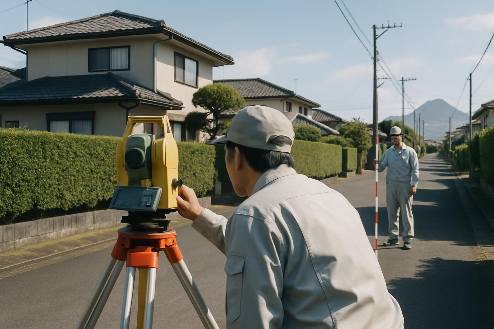

境界があいまいなまま売却・相続の手続きを進めようとして、思わぬところで足止めされるケースは少なくありません
実家を売却しよう、あるいは相続の手続きを進めようとしたときに、「境界がはっきりしない」という壁にぶつかるオーナー様は少なくありません。特に古い分譲地や、隣地との間に長年明確な取り決めがなかった土地では、いざという時に手続きが止まってしまうことがあります。
この記事では、空き家で境界トラブルが起きやすい理由と、確定測量の進め方・費用の目安をまとめました。
なぜ空き家は境界トラブルが起きやすいのか
古い測量図しかない、あるいは測量図自体が残っていない。前の所有者の代で口頭の取り決めのまま済ませていた。隣地の所有者が代替わりし、境界の認識にズレが生じている。塀や生垣の位置が、必ずしも登記上の境界線と一致しているとは限らない――こうした事情が重なりやすいのが実情です。
空き家の場合、所有者が長く現地を離れていることが多いため、境界標（境界を示す杭やプレート）が失われていたり、隣地の状況が変わっていたりすることに気づきにくいという点も見落とされがちです。
境界が確定していないと何に困るのか
| 場面 | 起きる問題 |
|---|---|
| 売却 | 買主・仲介会社から境界確定を求められることが多く、未確定のままだと契約・引き渡しが進まないことがある |
| 相続登記・分筆 | 土地を分けて相続する場合、境界が定まっていないと手続きを進められないことがある |
| 隣地とのトラブル | 塀や庭木の越境、工作物の位置をめぐって話がこじれることがある |
確定測量と現況測量の違い
現況測量は、既存の資料や現地の状況をもとに、簡易的に面積・形状を把握する測量です。境界の法的な確定は伴いません。一方確定測量は、隣接するすべての土地所有者（場合によっては道路など官有地の管理者も）の立会いのもとで境界を確認し、境界標を設置する測量です。売却や分筆の際に求められるのは、主にこちらの確定測量です。
費用は隣接地の数や境界標の有無、筆界特定の要否によって変動するため一概には言えませんが、目安として数十万円程度、期間も数か月かかることがあるとされています。あくまで目安であり、正確な金額は土地家屋調査士による現地調査後の見積もりで確認する必要があります。
空き家の境界を放置しないためにできること
- 古い測量図・登記簿謄本・境界標の有無を早めに確認しておく
- 隣地所有者の連絡先を把握しておく（代替わりしている場合は特に）
- 将来売却や相続の予定があるなら、早めに土地家屋調査士へ相談しておく
- 境界標が見当たらない場合は、自己判断で動かさず専門家に相談する
TAMARIEでは、提携の土地家屋調査士のご紹介から、そもそも測量が必要かどうかの見極めまで、売却・相続を見据えたご相談に対応しています。
境界、最後に確認したのはいつですか？
売却や相続の予定がまだ先でも、境界の状態を早めに把握しておくと、いざという時の選択肢が広がります。